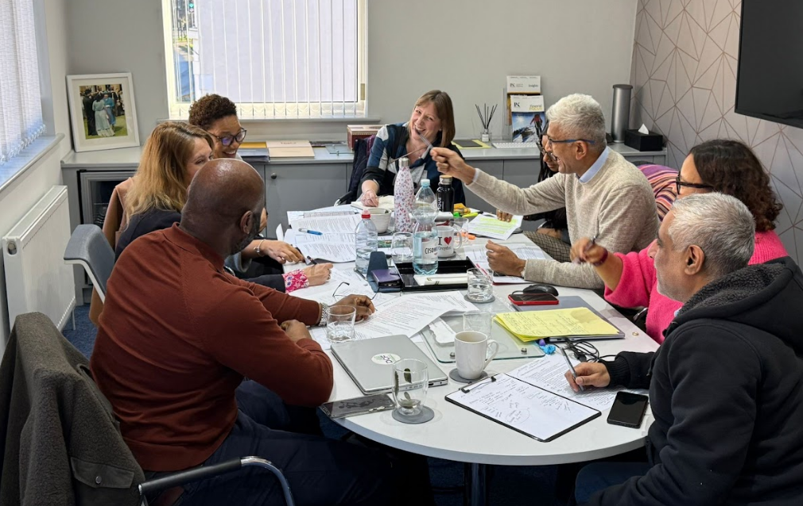

Building Stronger Businesses Through Apprenticeships in Croydon
How partnering with Croydon College can help local SMEs grow talent, boost culture, and invest in the community
This is a pull out quote that stands out from the main content.

There was a real buzz at the recent “Strength in Alliance” event at Croydon College—and for good reason. Local businesses, community leaders, and apprentices came together to explore a simple but powerful idea: growing your business by growing people.
At the heart of the discussion was apprenticeships—how they’re not just about filling roles, but about building skills, shaping culture, and creating long-term value for both businesses and young people in Croydon.
Building Stronger Businesses Through Apprenticeships in Croydon
One standout story came from an apprentice who started at 17 and is now building a solid engineering career, complete with his own van and real responsibility. That journey didn’t happen by chance. It was the result of collaboration between employer and college.
Building Stronger Businesses Through Apprenticeships in Croydon
One standout story came from an apprentice who started at 17 and is now building a solid engineering career, complete with his own van and real responsibility. That journey didn’t happen by chance. It was the result of collaboration between employer and college.
{kind=link}